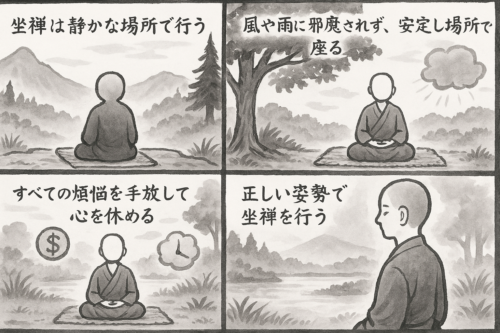

七十五巻 巻一覧
正法眼藏第11 坐禪儀
本ページの導入・語彙・深掘り・クイズは tools/regen_volume_intro_from_corpus.py が OpenAI API で生成したものです（入力は当巻冒頭原文の抜粋）。内容はモデル出力のため、重要箇所は必ず原文・教本と照合してください。
出典: https://shomonji.or.jp/zazen/doc/genzou.html
（ローカル生成の全文: 全文ページ）
この巻の位置（導入）
參禪は坐禪なり。坐禪は靜處よろし。坐蓐あつくしくべし。風烟をいらしむる事なかれ、雨露をもらしむることなかれ、容身の地を護持すべし。
坐處あきらかなるべし、晝夜くらからざれ。冬暖夏涼をその術とせり。諸緣を放捨し、萬事を休息すべし。善也不思量なり、惡也不思量なり。
語彙の足場
- 坐禪：心を静め、身体を整えて行う瞑想の一形態。道元が重視した修行法であり、心の平静を得るための手段。
- 靜處：静かな場所。坐禪を行う際に心を落ち着けるために必要な環境。
- 坐蓐：坐禪の際に使用する敷物。坐禪を行うための快適な基盤を提供する。
- 風烟：風や煙のこと。坐禪の際にはこれらの影響を受けない静かな環境が求められる。
- 萬事を休息：すべての事柄を一時的に手放し、心を休めること。坐禪の重要な要素。
本文（冒頭・抜粋）
出典はリポジトリ内 doc/正法眼蔵.txt です。原文の参照元: https://shomonji.or.jp/zazen/doc/genzou.html
參禪は坐禪なり。
坐禪は靜處よろし。坐蓐あつくしくべし。風烟をいらしむる事なかれ、雨露をもらしむることなかれ、容身の地を護持すべし。かつて金剛のうへに坐し、盤石のうへに坐する蹤跡あり、かれらみな草をあつくしきて坐せしなり。坐處あきらかなるべし、晝夜くらからざれ。冬暖夏涼をその術とせり。
諸緣を放捨し、萬事を休息すべし。善也不思量なり、惡也不思量なり。心意識にあらず、念想觀にあらず。作佛を圖する事なかれ、坐臥を脱落すべし。
飮食を節量すべし、光陰を護惜すべし。頭燃をはらふがごとく坐禪をこのむべし。黄梅山の五祖、ことなるいとなみなし、唯務坐禪のみなり。
坐禪のとき、袈裟をかくべし、蒲團をしくべし。蒲團は全跏にしくにはあらず、跏趺のなかばよりはうしろにしくなり。しかあれば、累足のしたは坐蓐にあたれり、脊骨のしたは蒲團にてあるなり。これ佛佛祖祖の坐禪のとき坐する法なり。
あるいは半跏趺坐し、あるいは結果趺坐す。結果趺坐は、みぎのあしをひだりのももの上におく。ひだりの足をみぎのもものうへにおく。あしのさき、おのおのももとひとしくすべし。參差なることをえざれ。半跏趺坐は、ただ左の足を右のもものうへにおくのみなり。
衣衫を寛繋して齊整ならしむべし。右手を左足のうへにおく。左手を右手のうへにおく。ふたつのおほゆび、さきあひささふ。兩手かくのごとくして身にちかづけておくなり。ふたつのおほゆびのさしあはせたるさきを、ほそに對しておくべし。
正身端坐すべし。ひだりへそばだち、みぎへかたぶき、まへにくぐまり、うしろへあふのくことなかれ。かならず耳と肩と對し、鼻と臍と對すべし。舌は、かみの顎にかくべし。息は鼻より通ずべし。くちびる齒あひつくべし。目は開すべし、不張不微なるべし。
かくのごとく身心をととのへて、欠氣一息あるべし。兀兀と坐定して思量箇不思量底なり。不思量底如何思量。これ非思量なり。これすなはち坐禪の法術なり。
坐禪は習禪にはあらず、大安樂の法門なり。不染汚の修證なり。
正法眼藏坐禪儀第十一
爾時寛元元年癸卯冬十一在越州吉田縣吉峰精舍示衆
図解（4コマ・AI生成）
教義の根拠は本文・出典に従い、漫画は比喩の補助に留めてください。

深掘り（読解の手掛かり）
- 坐禪は静かな環境で行うべきであり、外的な影響を避けることが重要である。
- 坐禪の姿勢には、全跏趺坐や半跏趺坐など、いくつかの形式が存在する。
- 坐禪中は、身体の各部位を正しい位置に保つことが求められ、心身の調和が重視される。
確認（形成評価）
各設問の下の「採点」で正誤を表示します（ブラウザ内のみ。ログは送りません）。